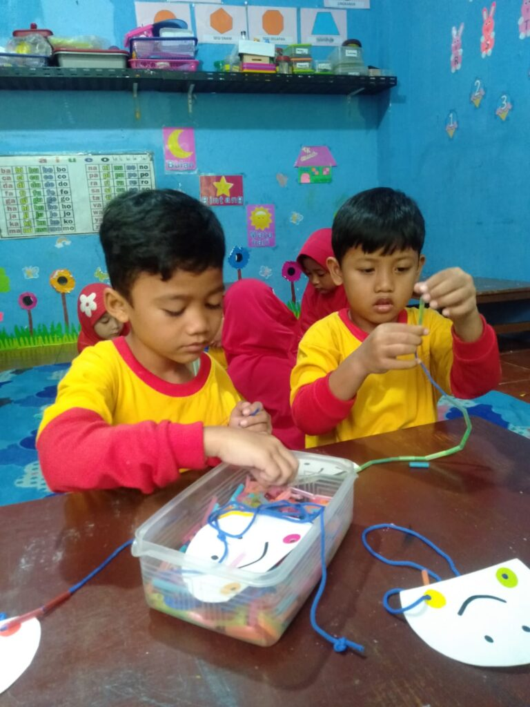
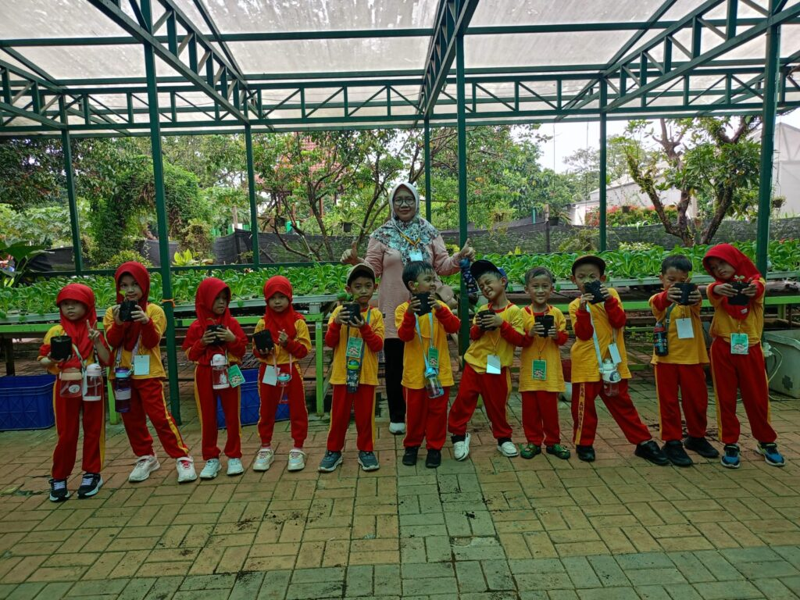
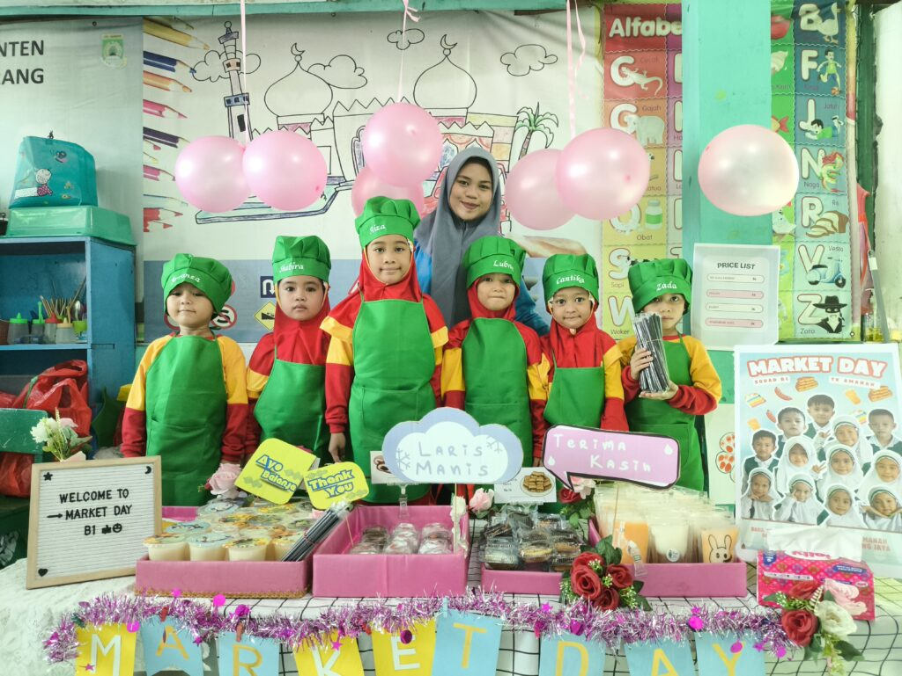
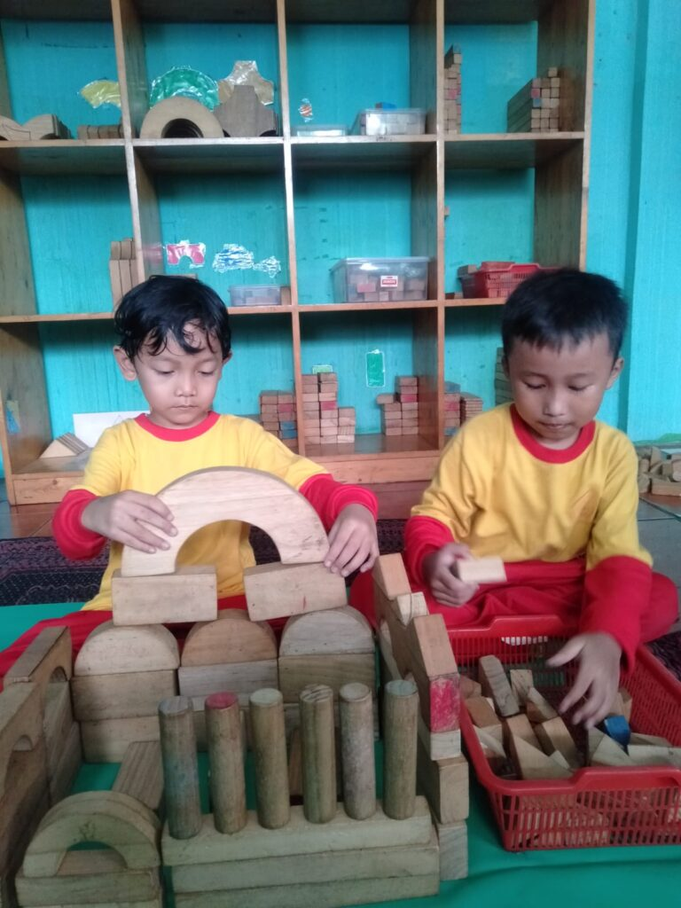
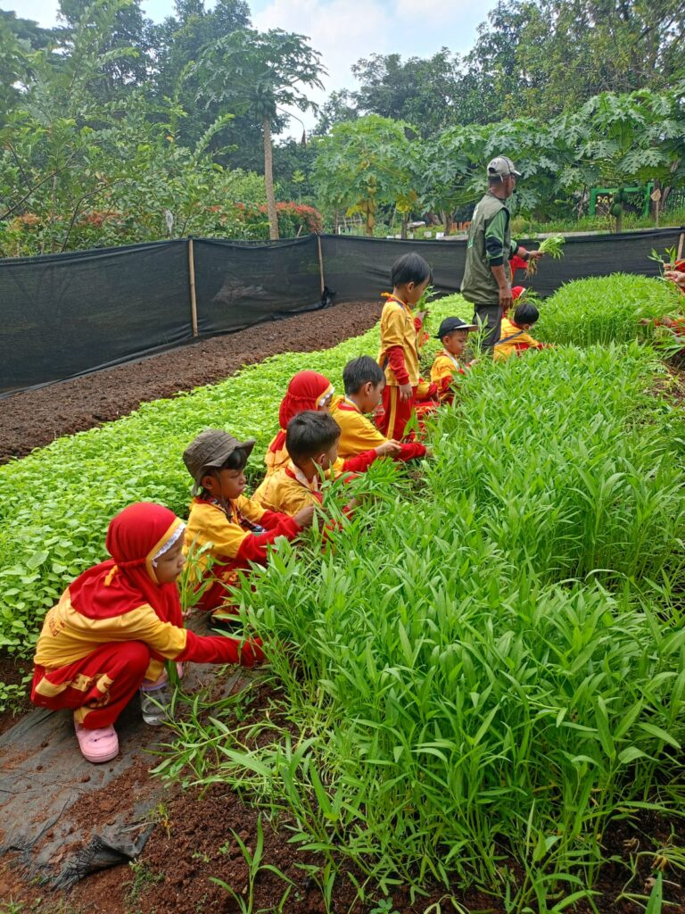
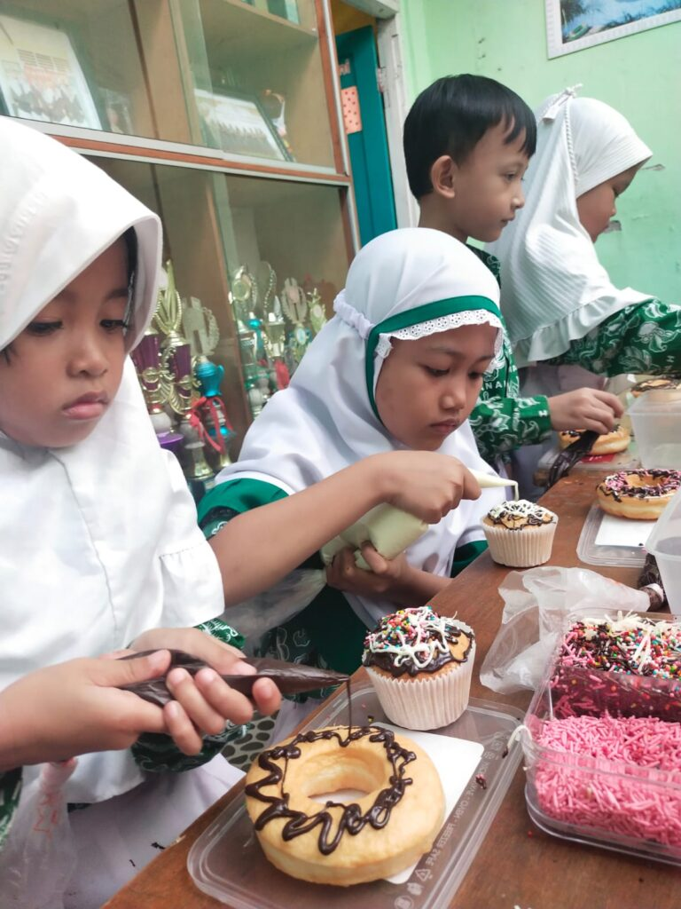

Belajar sambil bermain
Kegiatan belajar dirancang menyenangkan dan sesuai tahap usia anak.
PENDIDIKAN ANAK USIA DINI
Belajar sambil bermain, mengenal Al-Qur’an, dan membiasakan ibadah dalam suasana yang ramah anak.


PROFIL SEKOLAH
TK Amanah mengajak anak belajar melalui bermain dalam lingkungan yang ramah anak. Kegiatan disesuaikan dengan tahap perkembangan, sambil mengenalkan ibadah, doa sehari-hari, Al-Qur’an, dan perilaku baik. Anak mendapat kesempatan untuk berlatih mandiri, bersosialisasi, serta mengembangkan kemampuan sejak usia dini.
Lihat program belajarBelajar sesuai tahap perkembangan anak
Pembiasaan ibadah dan doa harian
Kemandirian dan akhlak sejak dini
KB/RA–TK AMANAH
Belajar sambil bermain dan pembiasaan Islami.
Kegiatan belajar dirancang menyenangkan dan sesuai tahap usia anak.
Anak mengenal doa harian dan kebiasaan ibadah dalam keseharian sekolah.
Pengenalan Al-Qur’an berjalan bersama pembiasaan sikap baik dan kemandirian.
FOTO KEGIATAN
Klik foto untuk melihat ukuran penuh.




BERITA SEKOLAH
LOKASI SEKOLAH
Alamat sekolah dan petunjuk arah untuk merencanakan kunjungan.
Peta bisa diperbesar dan digeser. Untuk navigasi perjalanan, buka petunjuk arah di Google Maps.